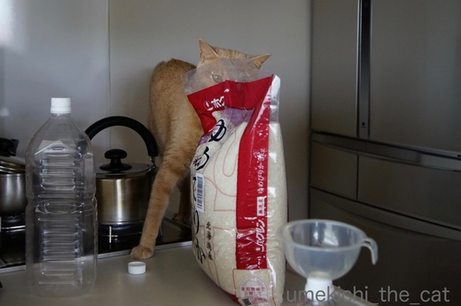
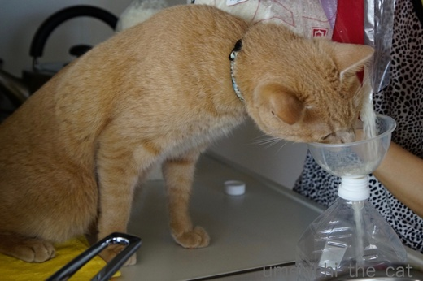
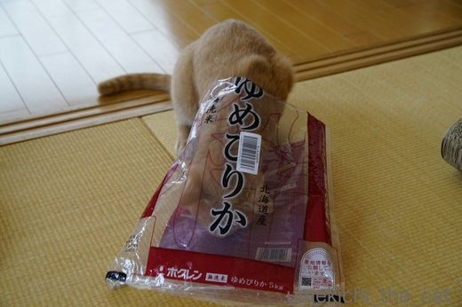

炭水化物Love [梅吉]


梅吉はお米が大好き。
我が家ではお米はペットボトルに移し替えて冷蔵庫で保管しているのですが
移し替え作業を始めるとどこにいても飛んでくるカフェオレ色。

ちょっとー、袋はかじらんといてー！

顔入れんといてーっ！！（ふきんも踏まんといてやっ

こぼれるーーー！！！
生米なんて食べさせたこと無いのにすごい執着心です。
炊いたお米には猫パンチを繰り出してきてごはん粒をゲットしようとします。
一度、炊きたてご飯で熱かったのかびっくりした顔をして
必死に肉球を舐めていたこともありました (^▽^;)
いくらねだられても猫にとって穀類は消化しにくい食べ物と聞くので
絶対にあげませんよー、梅吉さん。
かわりに袋を差し上げましょう＾＾

猫も大好きゆめぴりか、なんてー(≧艸≦)
私はホクレンの回し者ではありませんよ。
お米の他はパンが大好き。パスタの乾麺を出しておくとかじっちゃうし。
飼い主に似て炭水化物好きなのでしょうか。
先週末は梅吉の体重変化を報告に病院へ行ってきました。
先生がいらっしゃいましたよ。
内臓脂肪の付き具合を確認するのにお腹をモミモミされて大変ご立腹中。
診察室にいるあいだ、ずーっと「シャーーーーーーーッ！うぉ〜〜〜〜〜〜〜ん！！」と
鳴きっぱなしなのですが梅吉の場合心拍数は猫の平均の平常時とほとんど変わりないんですって。
つまり、威嚇しているけれどもビビってはいないという・・・^^;
度胸のある子やな。
ビニールプールの空気の出し入れの音にはビビって隠れちゃうのにね！
この日の体重は4550ｇ、触診も問題なく良い状態を保っている様です。
次回10月のワクチン接種時に朝食抜きで病院へ行き
採血してもらう予定です。
がっつき大王の梅吉に朝食抜き・・・出来るのだろうか・・・・・

カフェオレ色の梅吉

梅吉 2023年8月10日 永眠


梅吉と出会った譲渡会

犬猫の理由なき殺処分ゼロ
妄想広告
UMEKICHI 光

爆発的に早い！
時々攻撃的！
Thanks to Mr.Boss365
爆発的に早い！
時々攻撃的！
Thanks to Mr.Boss365

お米零れてますねぇ
大変だぁ～大好きなんだぁねっ
ころんが パン一口だけ食べたこと
何回かあったけど
パクッてぇされちゃうとなんかぁ嬉しい感じしますよん
わ～唸ってる～
うちのも出てくるまで 唸りぱなしです
恥ずかしい程です(T_T)
問題なくて良かったねっ
by みうさぎ (2017-08-02 15:06)
ゆめぴりかを食べてるなんて凄いわー！
うちは北海道だけど、ななつぼしｗｗ
梅吉君、お米が好きなのねー。お米の匂いって爪の匂いに近いのかな？ってふと思いました。
うみちゃん、私が爪をやすりで削ると、すごいフガフガ言いながら匂い嗅いでやすりを舐めます(笑)
威嚇はしてるけどビビってないって凄いと思う！
うちはきっと心拍数すごいだろうな。でもね、威嚇出来ない子たちなの。
あおは「あにゃにゃー」っては叫んでるけどｗ
by リュカ (2017-08-02 15:29)
お米が好き？
こんなに好きだなんて、かわいい～珍しいですねえ！
昔の猫には「猫まんま」あげるの普通で、残ったご飯に鰹節混ぜて、みそ汁かけたりしてましたから～少しぐらいあげても大丈夫ではあると思います。
実は吸収しないので、栄養にならないと知ったときはビックリ。
以前は～外でタンパク質は自力で捕まえてましたからね＾＾；
威嚇してもビビってないなんて～
梅吉くん、大物ですね＾＾
by sana (2017-08-02 15:45)
梅吉さん！！お米が大好きだとは♪
思いっきりお顔を突っ込んでますね！
そしてお米こぼれてる(;^_^A
シャーと言いながらも心拍数は普通（笑
大物ぶりを発揮していますね(^^♪
by きぃ (2017-08-02 16:13)
梅吉くんお米好きなんだ～。うちはナノがふきこぼれを舐めに来るくらい。きなこは全く見向きもしません(*^^*)
シャーって言ってるけど平常心なんですね！漢ですね～！
by palpal (2017-08-02 17:00)
みうさぎさん＞パクッと食べさせてあげたいんですけどねー^^;
癖になっちゃうと困るので我が家では禁！としますww
動物病院で診察室から出たら「すごい元気なにゃんちゃんね^^;」
と言われた事がありますよー (^▽^;)ちょっとﾊｽﾞｶｼｲ
リュカさん＞おっとは米屋の息子^^;お米の味にはちょっとうるさいのよー。
ななつぼしも美味しいよね。
最近売り出している「きたくりん」もあっさりしてなかなかでした＾＾
こだわっているわけじゃ無いけれど道産米買っちゃいますww
梅吉も爪のお手入れしているとすごい寄ってくるーーっ！
幼い時は人の切った爪食べたりしてたし (^▽^;)
そうか、そういう繋がりね！妙に納得！！
sanaさん＞そうですよね！梅吉生まれてくる時代を間違えたかもー。
白米かつぶしをたらふく食べて、狩は得意そうだから難なくタンパク質をゲット！
度胸もあるから縄張のボスとして君臨して・・・・・
でも甘えん坊だからやっぱり今の時代の我が家が一番かな(^_－)☆
きぃさん＞毎回毎回床やシンクにお米が飛び散って困りますー。
と言いながら決して梅吉を隔離して作業をしたりしないところが
自分でもふふふふふ・・・・・です。
困るのですが必死で顔を突っ込んでくるのが可愛いのです(≧艸≦)
palpalさん＞ふきこぼれは消化に良さそうですよね＾＾
せめて生米はやめていただきたい！
by ちぃ (2017-08-02 17:35)
お米がこぼれて大変ですね。
うちのユキはビニールが好きで、音がすると飛んできます。
だから、すかさずごみ箱に捨てます。
そうしないと、くわえて持って行きます(^-^;
by riverwalk (2017-08-02 18:43)
お米のザーーッっていう音と動きが面白いのかと思ったら、ご飯食べるんですね。
うちでは勝手に戸棚を開けてクロワッサンを食べるガンちゃんに困っているけど、梅吉さんはさすが和食派! ヘルシーで体重管理もバッチリ!!
by zombiekong (2017-08-02 20:15)
梅吉さん、さすが大阪の子やね～♪
ウチのも炊飯器は大好きで蒸気穴を舐めに来るので炊飯中は目が離せず。
ゆえにタイマー炊飯はできません(-_-メ)
病院でビビッないとはさすがです。
ウチのは病院に着くと一声も発することなく縮こまってガタガタ震えるばかり。もちろん肉球汗びっしょりで看護師さんに気の毒がられます^^;
by ゆきち (2017-08-02 20:54)
お米に執着していますね。
梅吉さん、先生を見る目が怖いよ〜
痛いことする人って覚えているのかしら？
by kiki (2017-08-02 21:24)
梅吉さん、米だけでなく炭水化物LOVEなんですねぇ( ^ω^ )
先代猫はなぜか素麺が好きでしたが(⌒-⌒; )
炊きたてご飯を猫パンチでGETってw
しかし、病院に行っても心拍数に変化なしってさすが「漢 梅吉さん」度胸が
座ってますねぇ=(^.^)=
by ニッキー (2017-08-02 21:39)
梅吉さん、お米がお好きとは♪
おせんべいも行けるクチかな？^^;
お米の品種の「ゆめぴりか」の名前を思い出せなかった知人が
「何だっけなー？ たしか”××ぴ××”だったような。」と言うので
「こしぴかり？」って言ったら大ウケでした。^^;;
by yes_hama (2017-08-02 21:55)
梅吉さんお米が好きなのですね！
あまり近づくとお米に毛が入っちゃいそうですね(^^)
by ma2ma2 (2017-08-02 22:06)
昔は、ねこまんまと言えば
残ったご飯にかつおぶしでしたけどねぇ。
最近はカリカリが主食になってますから＾＾；
by ぽちの輔 (2017-08-03 07:10)
米のザーッという音にも反応してるんでしょうか。
でも、昔の猫は米を食べていたので、その名残もあるんでしょうか？
家で飼ってた猫は、煮干しを飲み水の容器に入れて出汁を取って飲んでました。
偶然かと思ったら意図的にやってたんですよ。猫の習性には驚きです(^^;)
by kou (2017-08-03 07:41)
お茶目で、かつ物に動じない。
先生は大物です。＾＾
by KENT0mg (2017-08-03 08:09)
梅吉くん、お米好きなのね。
家はお米に興味を持つ子はいないな～。
お料理してるときは、ひなとまりもが私の足元をうろうろしてますけど・・・。
君たちのじゃないよって言っても離れません。
おこぼれ狙われてる感半端ないですｗ
内臓脂肪。問題なさそうで良かったね。
朝食抜きの日は、病院が開いたらすぐに連れていって
帰ってきたらすぐご飯！少しだけ我慢しようね(^-^)
夜も朝も抜いてくださいって言われることを思えばね。頑張ろっ♪
by emi (2017-08-03 14:51)
おもちゃじゃなくて、食べ物として飛んでくるのねー。不思議～。前世のDNA・・・？にゃんこの枠を超えた存在(≧∇≦)ｷｬｰ♪
by Ginger (2017-08-03 16:38)
袋とか音がじゃなくて炭水化物が好きなんですね。
かわいい！
そして私も炭水化物だ～いすき。仲間だ～♪
ゆめぴりか、美味しいですよね。
by ふにゃいの (2017-08-03 22:37)
朝食抜き…起きるなり、4時くらいに病院に行けば、ひもじい思いをさせなくて済むかなぁ〜(^^;
王子は診察終わってからお会計待ちのロビーで「シャー」とか言ってます(･_･;
診察中はあまりの動揺でどこか別の世界に行ってしまっているのかもしれません(^^;
by も〜 (2017-08-04 13:05)
riverwalkさん＞こぼれたお米はベランダにやってくる
スズメさんたち行きとなります^^;
ビニール袋は梅吉も大好きですよ〜。
特にコンビニでビールなどを入れてくれる小さめのレジ袋。
丸めて投げるとくわえて戻って来て
「もいっかいなげてやー」と催促されます。
梅吉、取ってこいが出来るんですよ(≧艸≦)
http://umekichi-the-cat.blog.so-net.ne.jp/2016-10-05
zombiekongさん＞幼い頃は動きと音に反応だったんですか
いつも間にやら目当てはお米本体に・・・(⌒_⌒;
ベランダにまいたスズメご飯を「ええなぁ・・・」という目で見てますww
クロワッサンにも食いついて来ますよー。
発酵バターがひときわそそる香りを放つからでしょうか。
ガンちゃんも梅吉も本格派！？
ゆきちさん＞炭水化物、粉もん好き＾＾
こてつくんが暴れん坊なのはお家の中限定なのですね！
何度か病院に行っているうちに病院スタッフ及び先生は「てきや！」と
認識したのか先生に飛びかかって顔ガブしそうになったので
慌てて梅吉を押さえました (^▽^;)
ますます先生に「アホな梅吉くん」と思われたかとww
kikiさん＞本にゃんも必死ですので目つきも鋭くなっちゃいました(^▽^;)
痛いこと、去勢手術を覚えてるのかはわかりませんが
「ここでええことあったことないわ！」と思っているのは確かですww
ニッキーさん＞素麺好きだったとはまた「ツウ」な感じですね＾＾
素麺＝炭水化物＋油、どちらもにゃんこのお好みかも。
病院での 漢 梅吉、少しは怯えるとかしてほしいものです^^;
yes_hamaさん＞それが、加工品には興味はないんですよねー。
ストレートにお米の味を堪能したいのかもしれません^^;
「こしぴかり」nice!!Ｏ(≧▽≦)Ｏそんなお米があったら思わず買ってしまいます！！
ma2ma2さん＞間違いなくお米に混ざってますね、梅吉の毛！
我が家はお食事にお客様をお招きできません(^▽^;)
ぽちの輔さん＞お米が主食、
梅吉のDNAに脈々と受け継がれているのでしょうか＾＾
昔の猫さんは頑張れば鶏肉もゲット出来ましたよね！
kouさん＞みずから出汁をとるにゃんこ！！
偶然やって見たら美味しかった〜だったのでしょうか(≧艸≦)
お水は出汁で美味しくなる、煮干しはふやけて食べやすくなる
頭いいですよねーー！
KENT0mgさん＞先生は大物ですが立候補はしませんよ。
そちらの方面はKENT0mgさんにお任せします（・∀・）ﾉ
聖子さん入閣しましたね〜。官房長官への布石でしょうか(・o・)
emiさん＞ひなちゃんとまりもちゃんが足元ウロウロ？かわいいねぇ＾＾
とってもとっても邪魔かもしれないけれど「あっちいってー」って
言えないでしょ(≧艸≦)
梅吉も起きている時は私の料理の手元を常に狙っています。
切りかけのお肉なんかうっかり置いておけないので
どこかにしまいながらじゃないと料理できなくて面倒なんだけど
これはこれで良いコミュニケーションなのかな・・・とも^^;
朝食抜きは正しい採血値を出すためにもがんばりたい・・・です（弱気
Gingerさん＞誰に教わったわけでもないのでDNAレベルの問題ですよねー、
ご飯好きww
生米って超消化に悪そうなので
出来れば炊いたご飯のみに興味を持っていただきたい・・・(^▽^;)
ふにゃいのさん＞炭水化物、粉もん好き。
正しい大阪の仔、日本猫と言えましょう・・・ (^▽^;)
私も炭水化物星人です！
極力避ける様にしていますが、うどんに炊き込みご飯
パスタにバゲット・・・・美味しいですよね〜ww
以前奮発して魚沼のコシヒカリを買ってみたのですが・・・
確かに美味しかったのですがゆめぴりかも負けてなかったですよ。
ゆめぴりか、コスパ最高！！
も〜さん＞王子は「思い出しシャー」ですか(≧▽≦)
先生に面と向かっては言えないのですね。奥ゆかしい・・・・・
先生に早朝診療の直訴してみればよかった！
朝一番の9:30に予約を入れて来たのですが
梅吉が毎朝ご飯を催促する第一回目が4:30頃。
それから病院へ行くまでのおおよそ５時間、梅吉をかわしきれるだろうか・・・
その日はとりあえず梅吉の「ご飯ちょうだい足ガブ攻撃」から
身を守るべく長ズボンをはかなくちゃ！と思っております(⌒_⌒;
by ちぃ (2017-08-04 16:01)
炭水化物LOVE〜♡ 梅吉さんとは、気が合うわ(^^)v
それにしても･･･ 生米に、猫を惹きつけるこれほどの魅力があるとは･･･(@@;)
by のらん (2017-08-05 08:02)
のらんさん＞まさかの生米愛ですよ〜＾＾
にゃんこのお世話をさせていただくのは３匹目ですが
生米好き、パン、パスタの炭水化物好きにゃんこは初めてです。
大阪の仔ゆえ・・・なのでしょうか^^;
by ちぃ (2017-08-05 13:18)